蹬鼻子上脸~
OCR 识别提示（待核对）
- OCR 自动识别文字，尚未逐字校对；可能错字、漏字、漏行，数字、姓名、标点及断行也可能有误，请以截图为准。
- 这里只保留 PDF 已截到的正文、留言和作者回复；截图以外的留言不在此存档中。
- 未从截图推断留言总数或回复关系；手机界面文字也可能混入 OCR。
- 低置信标记仅为机器提示，并不表示未标记的文字已经准确。
识别工具：tesseract 5.5.0 · tesseract-ocr/tessdata_best chi_sim。识别器置信度仅用于提示核对，不是文字准确率。
第 1 页 · 原始截图
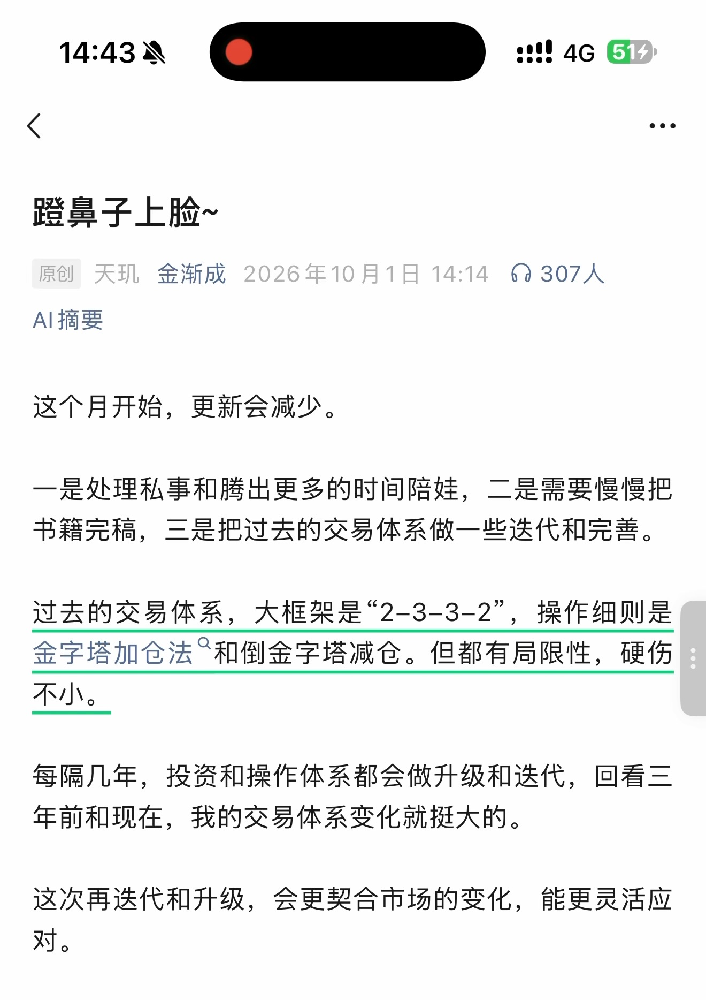
查看本页自动识别文字（OCR待核对） · 16 处低置信度提示
以下为未经逐字核对的自动识别结果，请以上方原图为准。
识别器标记 16 处低置信度，请对照截图核对
这些是识别器的风险提示，并不等于已确认的错误。
- 人
- 路鼻子上脸 ~
- 原创天现金渐成 2026 年 10 月 1 日 14:14 6 307 人
- 书籍完稿， 三是把过去的交易体系做一些迭代和完善。
- 过去的交易体系， 大框架是 2-3-3-2， 操作细则是
- 金字塔加仓法 “和倒金字塔减仓。 但都有局限性， 硬伤
- 每隔几年， 投资和操作体系都会做升级和迭代， 回看三
- 年前和现在， 我的交易体系变化就挺大的。
- 这次再欠代和升级， 会更契合市场的变化， 能更灵活应
第 2 页 · 原始截图
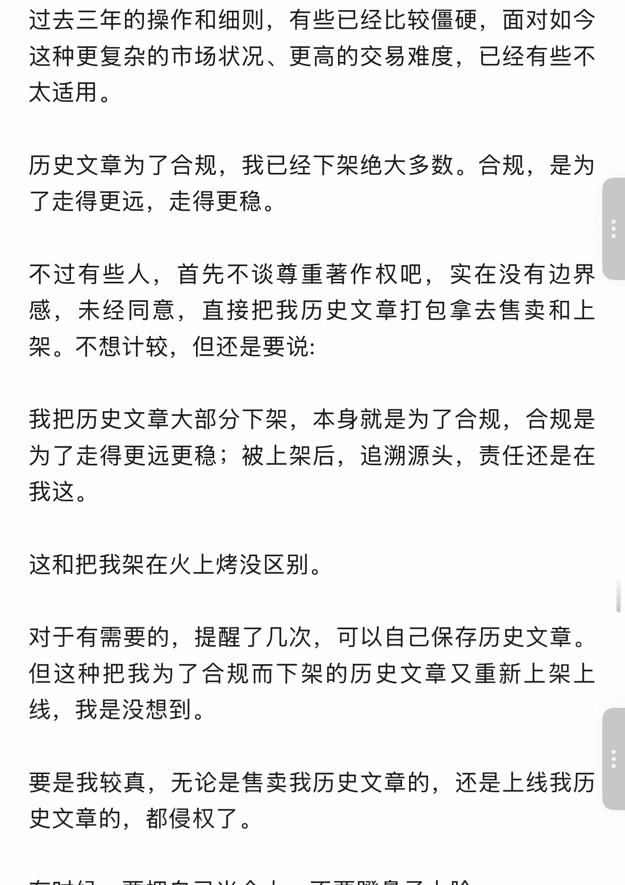
查看本页自动识别文字（OCR待核对） · 13 处低置信度提示
以下为未经逐字核对的自动识别结果，请以上方原图为准。
识别器标记 13 处低置信度，请对照截图核对
这些是识别器的风险提示，并不等于已确认的错误。
- 过去三年的操作和细则， 有些已经比较僵硬， 面对如今
- 这种更复杂的市场状况、 更高的交易难度， 已经有些不
- 太适用。
- 不过有些人人， 首先不谈尊重著作权吧， 实在没有边界
- 感， 未经同意， 直接把我历史文章打包拿去售卖和上
- 架。 不想计较， 但还是要说 :
- 为了走得更远更稳 ; 被上架后， 追溯源头， 责任还是在
- 线， 我是没想到。 上
- 史文章的， 都侵权了。
第 3 页 · 原始截图
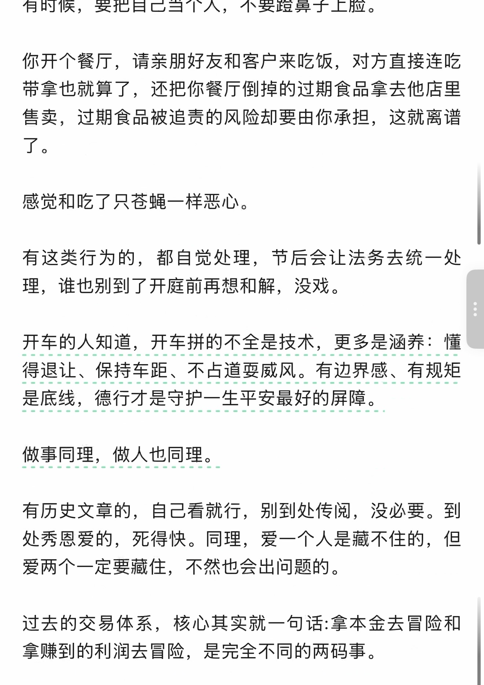
查看本页自动识别文字（OCR待核对） · 15 处低置信度提示
以下为未经逐字核对的自动识别结果，请以上方原图为准。
识别器标记 15 处低置信度，请对照截图核对
这些是识别器的风险提示，并不等于已确认的错误。
- 有时候， 要把自己当个人， 不要路身子上脸。
- 你开个餐厅， 请亲朋好友和客户来吃饭， 对方直接连吃
- 了 O
- 感觉和吃了只苍蝇一样恶心。
- 有这类行为的， 都自觉处理， 节后会让法务去统一处
- 开车的人知道， 开车拼的不全是技术， 更多是涵养 : 恒
- 得退让、 保持车距、 不占道雪威风。 有边界感、 有规矩
- 是底线， 德行才是守护一 -生平安最好的屏障。
- 处秀恩爱的， 死得快。 同理， 爱一个人是藏不住的， 但
- 爱两个一定要藏仁， 不然也会出问题的。
第 4 页 · 原始截图
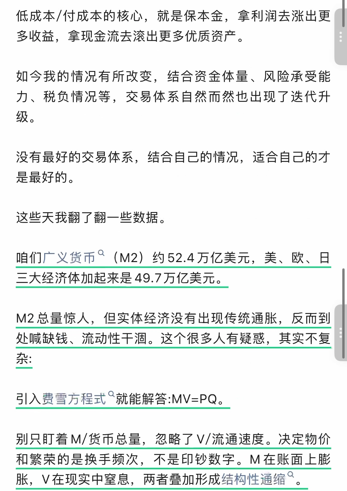
查看本页自动识别文字（OCR待核对） · 18 处低置信度提示
以下为未经逐字核对的自动识别结果，请以上方原图为准。
识别器标记 18 处低置信度，请对照截图核对
这些是识别器的风险提示，并不等于已确认的错误。
- 力、 税负情况等， 交易体系自然而然也出现了迭代升
- 咱们广义货币 ” (M2) 约 52.4 万亿美元， 美、 欧、 日
- M2 总量惊人， 但实体经济没有出现传统通胀， 反而到
- 处喊缺钱、 流动性干泗。 这个很多人有疑惑， 其实不复
- 引入费雪方程式 " 就能解答 :MV=PQ。
- 别只盯着 M/ 货币总量， 忽略了 V/ 流通速度。 决定物价
- 和繁荣的是换手频次， 不是印钞数字。M 在账面上脱
- 胀，V 在现实中窒息， 两者赤加形成结构性通缩 ”。
第 5 页 · 原始截图
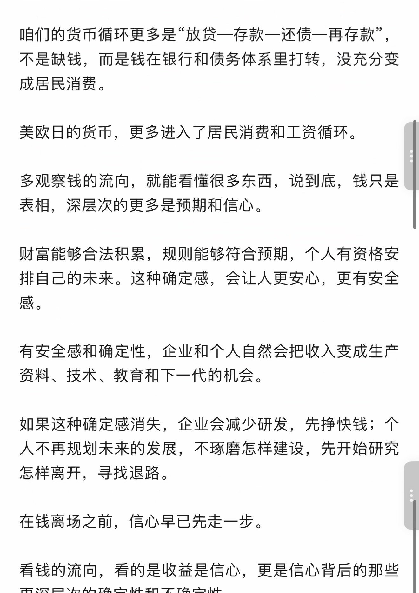
查看本页自动识别文字（OCR待核对） · 8 处低置信度提示
以下为未经逐字核对的自动识别结果，请以上方原图为准。
识别器标记 8 处低置信度，请对照截图核对
这些是识别器的风险提示，并不等于已确认的错误。
- 咱们的货币循环更多是放贷一存款一还债一再存款，
- 如果这种确定感消失， 企业会减少研发， 先挣快钱 ; 个
- 怎样离开， 寻找退路。
- 在钱离场忆前， 信心早已先走一步。
第 6 页 · 原始截图
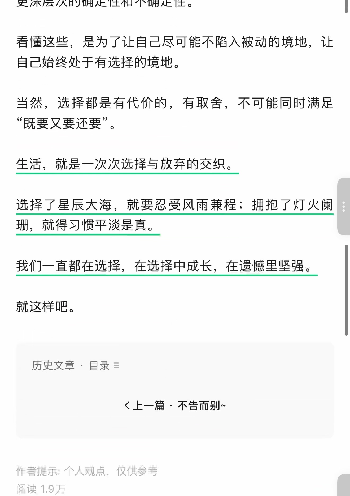
查看本页自动识别文字（OCR待核对） · 16 处低置信度提示
以下为未经逐字核对的自动识别结果，请以上方原图为准。
识别器标记 16 处低置信度，请对照截图核对
这些是识别器的风险提示，并不等于已确认的错误。
- 当然， 选择都是有代价的， 有取舍， 不可能同时满足
- “ 既要又要还要 “。
- 生活， 就是一次次选择与放弃的交织。
- 选择了星辰大海， 就要忍受风雨兼程 ; 拥抱了灯火盖
- 珊， 就得习惯平淡是真。
- 我们一直都在选择， 在选择中成长， 在遗憾里坚强。
- 历史文章， 目录 =
- 《上一篇不告而别 ~
- 作君提示. 个人观点， 仅供参和
第 7 页 · 原始截图
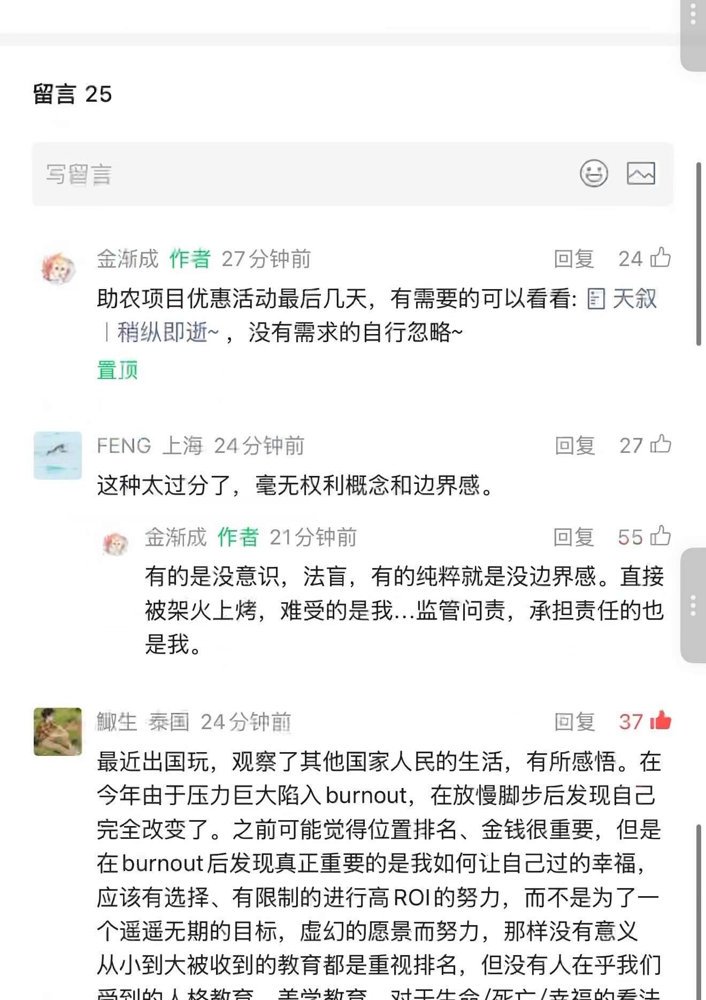
查看本页自动识别文字（OCR待核对） · 40 处低置信度提示
以下为未经逐字核对的自动识别结果，请以上方原图为准。
识别器标记 40 处低置信度，请对照截图核对
这些是识别器的风险提示，并不等于已确认的错误。
- 写鲤言 CD
- 多金渐成作者 27 分钟前回复 ”24 办
- 二
- 助农项目优惠活动最后几天， 有需要的可以看看 : 图天叙
- | 稍纵即逝 ~， 没有需求的自行忽略 ~
- FENG 上海 24 分钟前回复 ”27 已
- ” 这种太过分了， 毫无权利概念和边界感。
- 稚 ” 金渐成作者 21 分钟前回复 ”55 办
- 有的是没意识， 法盲， 有的纯粹就是没边界感。 直接
- 被架火上烤， 难受的是我 .… 监管问责， 承担责任的也
- 钥生篆国 24 分钟前回复 37 中
- 最近出国玩， 观察了其他国家人民的生活， 有所感悟。 在
- 今年由于压力巨大陷入 burnout， 在放慢脚步后发现自己
- 完全改变了。 之前可能觉得位置排名、 金钱很重要， 但是
- 在 burnout 后发现真正重要的是我如何让自己过的幸福，
- 个遥遥无期的目标， 虚幻的愿景而努力， 那样没有意义
第 8 页 · 原始截图
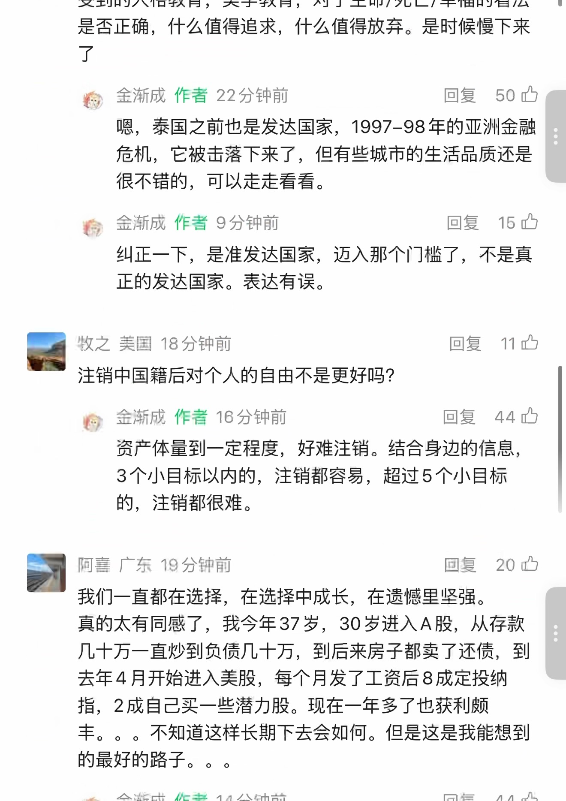
查看本页自动识别文字（OCR待核对） · 37 处低置信度提示
以下为未经逐字核对的自动识别结果，请以上方原图为准。
识别器标记 37 处低置信度，请对照截图核对
这些是识别器的风险提示，并不等于已确认的错误。
- 八， 全渐成作者 22 分钟前回复 ”50 四
- 咽， 秦国之前也是发达国家，1997-98 年的亚洲金融
- 很不错的， 可以走走看看。
- 稚， 金渐成作者 9 分钟前回复 15 四
- 纠正一下， 是准发达国家， 迈入那个门槛了， 不是真
- 牧之美国 18 分钟前回复 11 中
- 注销中国籍后对个人的自由不是更好吗 ?
- 办金源成作者 16 分钟前回复 ”44 办
- 阿喜广东 19 分钟前回身 3 已
- 我们一直都在选择， 在选择中成长， 在遗憾里坚强。
- 真的太有同感了， 我今年 37 岁，30 岁进入 A 股， 从存款
- 合金渐成作者 14 分钟前回复 ”44 办
第 9 页 · 原始截图
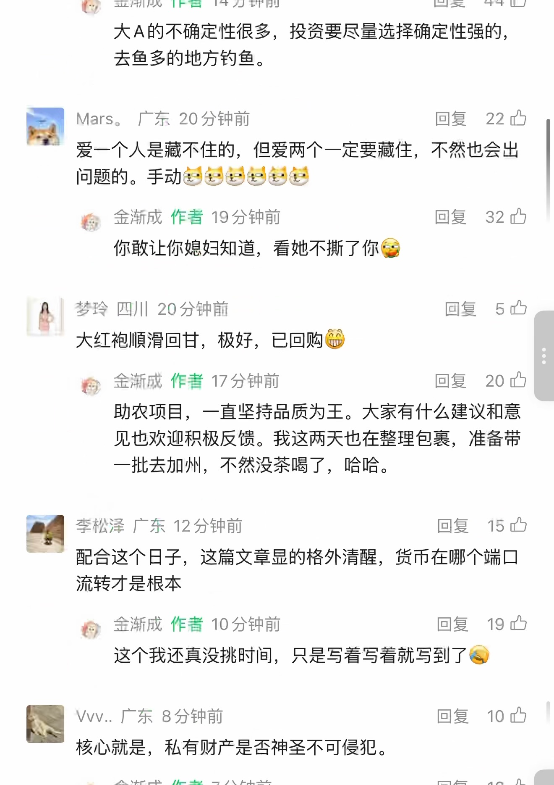
查看本页自动识别文字（OCR待核对） · 49 处低置信度提示
以下为未经逐字核对的自动识别结果，请以上方原图为准。
识别器标记 49 处低置信度，请对照截图核对
这些是识别器的风险提示，并不等于已确认的错误。
- 病 Mars。 广东 20 分钟前回复 ”22 内
- 爱一个人是藏不住的， 但爱两个一定要藏位， 不然也会出
- 问题的。 手动例名全直人名佑
- 伶， 金渐成作者 19 分钟前回复 ”32 内
- 你敢让你媳妇知道， 看她不据了你例
- 避梦玲四川 20 分钟前回复 5
- 大红袍顺滑回甘， 极好， 已回购代
- 个人金渐成作者 17 分钟前回复 ”20 办
- 助农项目， 一直坚持品质为王。 大家有什么建议和意
- 见也欢迎积极反馈。 我这两天也在整理包训， 准备带
- 一批去加州， 不然没茶喝了， 哈哈。
- 李松泽广东 12 分钟前回复击已
- ” 配合这个日子， 这篇文章显的格外清醒， 货币在哪个端口
- 办人金渐成作者 10 分钟前回复 ”19 中
- 这个我还真没挑时间， 只是写着写着就写到了借
- Vvv… 广东 8 分钟前回复记忆
第 10 页 · 原始截图
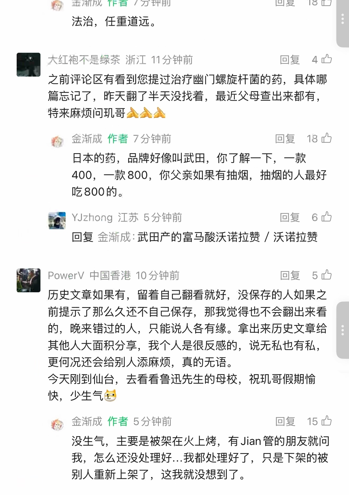
查看本页自动识别文字（OCR待核对） · 46 处低置信度提示
以下为未经逐字核对的自动识别结果，请以上方原图为准。
识别器标记 46 处低置信度，请对照截图核对
这些是识别器的风险提示，并不等于已确认的错误。
- 内 ” 金渐成作者 7 分钟前回复圳已
- 大红宰不是绿茶浙江 11 分钟前回复 ”4 跌
- 篇忘记了， 昨天翻了半天没找着， 最近父母查出来都有，
- 特来麻烦问各哥信会全
- 伶人金渐成作者 7 分钟前回复 18 办
- 日本的药， 品牌好像叫武田， 你了解一下， 一款
- 400， 一款 800， 你父亲如果有抽烟， 抽烟的人最好
- YJzhong 江苏 5 分钟前回复 wo
- 回复金渐成 :武田产的富马酸沃诺拉赞 / 沃诺拉移
- PowerV 中国香港 10 分钟前回复 5 让
- 前提示了那么久还不自己保存， 那我觉得也不会翻出来看
- 的， 晚来错过的人， 只能说人各有缘。 拿出来历史文章给
- 其他人大面积分享， 我个人是很反感的， 说无私也有私，
- 今天刚到仙台， 去看看鲁迅先生的母校， 祝现哥假期愉
- 快， 少生气名
- 痊， 金渐成作者 5 分钟前回复 15 让
- 没生气， 主要是被架在火上烤， 有 Jian 管的朋友就问
- 我， 怎么还没处理好 .…. 我都处理好了， 只是下架的被
第 11 页 · 原始截图
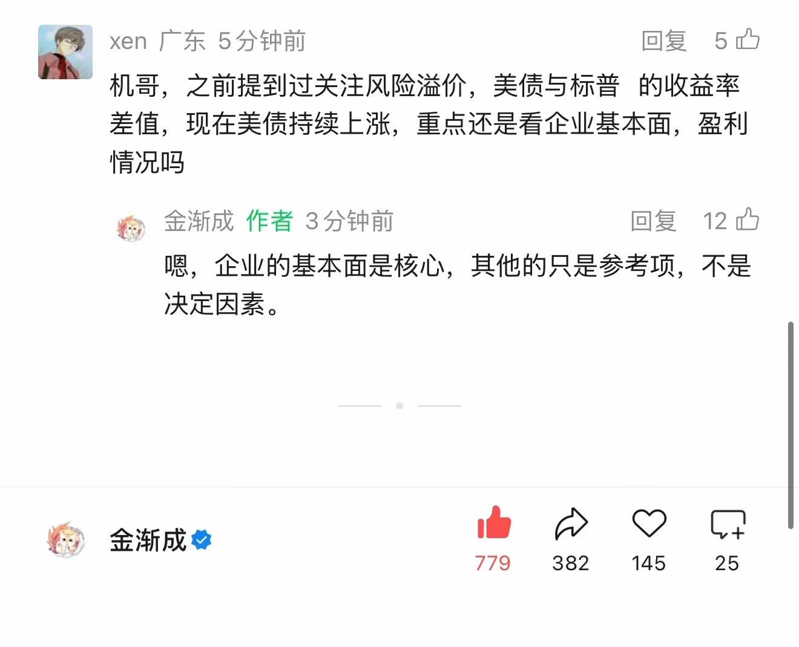
查看本页自动识别文字（OCR待核对） · 13 处低置信度提示
以下为未经逐字核对的自动识别结果，请以上方原图为准。
识别器标记 13 处低置信度，请对照截图核对
这些是识别器的风险提示，并不等于已确认的错误。
- 国 xen 广东 5 分钟前回复已
- 差值， 现在美债持续上涨， 重点还是看企业基本面， 伪利
- 移金渐成作者 3 分钟前回复 12 内
- 咽， 企业的基本面是核心， 其他的只是参考项， 不是
按日期浏览全部来源（同日按条目标识排序）
回到页首 ↑